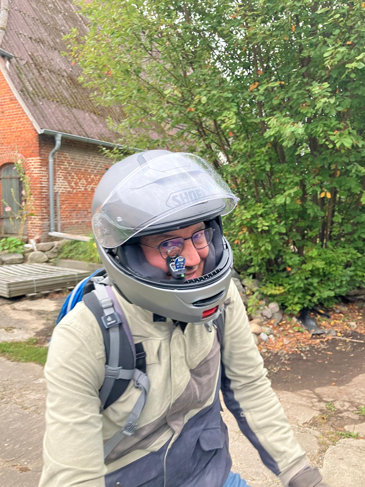

CanDisp 52
The story behind CanDisp 52
It all started with a vehicle project of my own, a heavily modified Vespa with MaxxECU fuel injection.
I needed a water-resistant CAN bus display for it. I could spend a lot of time adapting an existing product or build one myself. You can probably guess which option I picked.
The first versions used small development boards with round displays. It was meant to be a personal project with a few gauge layouts, some CAN data processing, and a nice round screen.
I soon wanted a more modern display with high pixel density, strong contrast, and smooth graphics. I wanted an interface that looked at home in a vehicle, a big step up from a small 128×128-pixel debug display.
As tends to happen with projects like this, the hobby got a little out of hand.
More ideas kept coming. Configurable screens, DBC import, BLE navigation, a Wi-Fi web interface, different display sizes, touch controls, external buttons, brightness control, firmware updates, and plenty more.
At some point it became clear that a device other people could rely on needed to work as a finished product, well beyond my own workbench.
That opened up a whole different world. Alongside firmware and gauge layouts came electrical safety, radio engineering, EMC, power supply design, CE conformity, documentation, WEEE registration, and packaging requirements.
I quickly learned how big the gap is between a working prototype and a finished product.
The CanDisp 52 I offer today is designed specifically for protected interior use and must be kept dry.
In the end, that was probably the most interesting part of the whole project. A small idea grew into a complete system that can be used in a wide variety of vehicles with a CAN bus.
